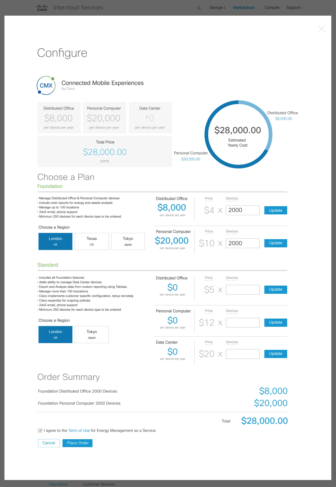

The challenge
Many vendors. One catalog.
As lead designer for the platform initiative, my mandate was to turn a disjointed ecosystem of third-party cloud services into a unified, self-service procurement marketplace.
The core design challenge was complexity abstraction: translating varied vendor pricing models, intricate software licensing terms and highly technical private-cloud deployment parameters into one standardized, frictionless catalog for enterprise IT buyers.
Varied pricing models
Third-party products were sold in different ways, yet had to sit in one consistent catalog.
Licensing & deployment
Intricate licensing terms and private-cloud deployment parameters had to become clear, self-service choices.
A small launch catalog
Only a limited number of applications were available at launch, so a massive search catalog would feel empty.
“A massive, complex search catalog would feel empty, so we focused on a streamlined, high-impact storefront layout that felt complete on day one while remaining architecturally ready to scale.”
How we got there
Five moves, from workflow mapping to the keynote stage.
I analyzed how different third-party software products were sold, then mapped a highly adaptable configuration template for product detail pages — one that could accommodate completely different vendor pricing models and deployment variables.
Discovery insights became a flexible wireframe structure that could scale with the vendor catalog. With few apps at launch, the layout leaned on prominent categorization and straightforward discovery paths instead of heavy filtering — and let the team cross-validate feature priorities for launch.
A single-page catalog grid, an inline configuration panel and a split-panel checkout with a live order summary — a clean progression from landing on the storefront to configuring specific vendor software.
A centralized design specification — core components, interaction behaviors and a custom icon library for infrastructure metrics — became the single source of truth across the cloud portfolio.
Working directly with SVPs and Directors, I turned complex cloud infrastructure capabilities into high-fidelity interactive prototypes and narratives for keynotes at CiscoLive!.
From flow to framework
FlowUser flow — sign-up / invitation → browse or search → select service → select plan → configure → check out → manage
Wireframe to final
The order-configuration view, before and after. Drag the handle to compare.

WireframeFinalKey screens
Browse, configure, check out.
ScreensEstablishing a scalable grid framework
A unified, single-page dashboard houses the entire initial catalog. Third-party cloud services sit in a clear, scannable grid, categorized by provider type and infrastructure function — application services, data analytics, developer tools.
IT operators can scan available solutions, pivot between vendor categories and see high-level pricing indicators in a single interaction loop, without navigational deep-dives.
Contextual product configuration & specs
Selecting an application opens an inline expansion panel with full service details, without losing your place in the catalog. This is the flexible configuration template that standardizes varied vendor models.
Structured pricing tiers, deployment options and hardware specifications live in the same panel, so users configure variables and check infrastructure compatibility without context switching.
Dynamic parameter configuration & checkout
A split-panel checkout guides buyers through final deployment variables and financial sign-off. As they set hosting environment, provisioning region and storage scale, a dynamic order summary recalculates cost in real time.
This feedback loop replaces manual ordering paperwork, giving procurement teams full visibility into infrastructure costs and configuration before committing to a deployment.
The solution
One storefront, discovery to checkout.
I established a unified storefront framework that consolidated service discovery, configuration and procurement into a single-page application workflow.
A dynamic configuration interface simplified complex deployment variables in real time, removing the administrative overhead of buying enterprise cloud software and creating a clear, scalable purchasing path across diverse vendor applications.
A single-page storefront
Discovery, configuration and procurement consolidated into one single-page application workflow — complete on day one, ready to scale.
See the catalog grid↓One configuration template for every vendor
An inline panel that standardizes varied vendor models: pricing tiers, deployment options and hardware specs, all in context.
See inline configuration↓Real-time cost feedback
A dynamic order summary recalculates as deployment variables change, giving full cost visibility before committing.
See checkout↓A shared spec for the portfolio
Centralized UI patterns, interaction behaviors and an icon library so teams could scale features consistently.
See the design system↓Cross-project governance and UI standardization.
To keep the broader cloud portfolio cohesive, I established a centralized design specification as the single source of truth for our UI patterns: standardized core components, interaction behaviors and a custom icon library for technical infrastructure metrics.
Formalizing these guidelines let cross-functional product teams scale marketplace features independently while staying visually consistent — and cut redundant front-end design overhead.
Outcomes & reflection
Outcomes- WorkflowOne single-page workflow
Discovery, configuration and procurement consolidated, removing the administrative overhead of buying enterprise cloud software.
- ClarityCost visibility before commit
Real-time order feedback replaced manual ordering paperwork with full visibility into costs and configuration states.
- ScaleTeams scaling independently
The shared spec let cross-functional teams scale marketplace features independently, with consistent UI and less redundant front-end design overhead.
- AlignmentExecutive alignment on the roadmap
Cross-functional alignment across engineering, product and leadership, plus prototypes and narratives for CiscoLive! keynotes built with SVPs and Directors.
Executive alignment & strategic product storytelling
A defining milestone was driving alignment between product engineering, product management and executive leadership on the platform’s long-term roadmap. Working directly with SVPs and Directors, I translated complex cloud infrastructure capabilities into high-fidelity interactive prototypes and strategic narratives for keynotes at CiscoLive!.
It reinforced the role of design in executive storytelling: tangible, interactive vision models secure stakeholder buy-in, align distributed engineering squads and communicate platform value to the broader market.
Tangible, interactive vision models secure stakeholder buy-in.